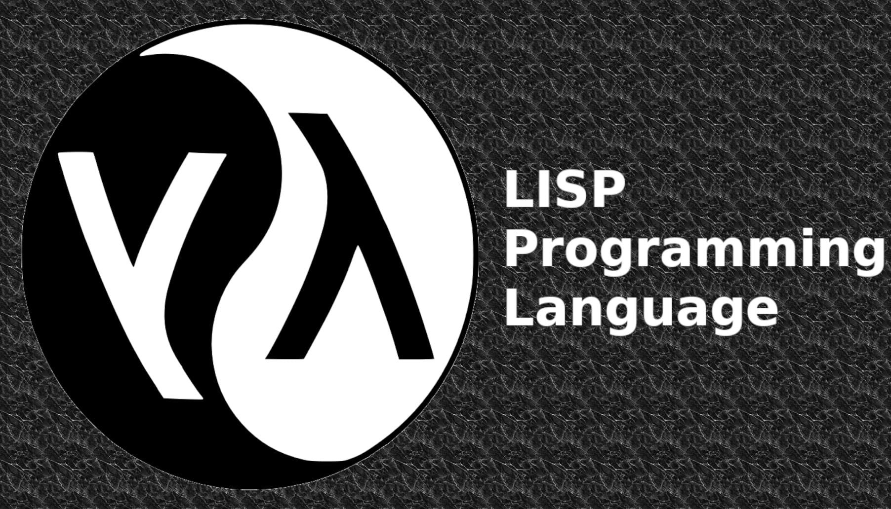

LISP was created by John McCarthy at the Massachusetts Institute of Technology in 1959. The program is a function applied to data, rather than being a sequence of procedural steps as in FORTRAN and ALGOL. LISP uses simple notations in which operations and their operands are given a parenthesized list, then uses the list structure to represent data, and program to operate on other programs as data. It is a common language used when programming AI, it helps in problems of AI capable of learning and then has evolved through numerous dialects, such as Scheme and Common LISP. Commercial companies and applications such as Grammarly, Boeing, Amazon, Capital One, and Walmart still use LISP and it's programs.
Source Link Source Link  Source Image Link